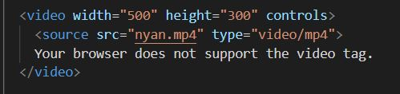
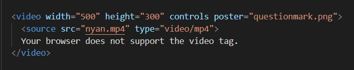

Blog Entry #8
11/11/2021
Video Tag
Last week I covered audio. So why not video this time?
I've already mentioned embedded YouTube videos in another blog entry. So this week I wanted to focus on the native video player.
In this snippet, you can see some of the attributes assignable to the video player. Here, I have specified the size of the player and enabled the controls bar. Browsers might let you set some of these attributes yourself. For example, in Chrome you can right click the video and hide the controls or set the video to loop. It is also good practice to include an error message that some browsers will display if the video doesn't work.
Another attribute is "poster." This changes the thumbnail of the video until it starts playing. Can you guess what video this is?
The supported filetypes are mp4, webm, and ogg. This type of video embedding certainly has its use in modern web design, but for general cases I think inline frame embedding is preferable. It lets you avoid file format compatibility issues, and at this point people are probably more familiar with YouTube's control UI than any others.